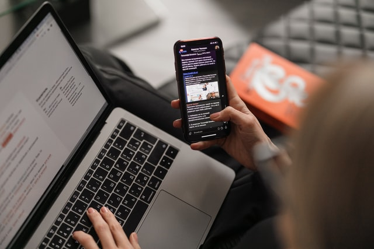

Nosso tema

Sabemos que os últimos anos foram difíceis em virtude do contexto pandêmico, assim como reconhecemos os impactos decorrentes deste. Diante disso, a saúde mental têm sido pauta de discussões atuais, visto que estresse, ansiedade e inquietação tem sido muiito recorrentes. Entretanto, não podemos ignorar a dependência desenvolvida entre dispositivos eletrônicos e usuários, levando em conta o uso crescente desses meios durante a pandemia.
Nós, da turma 201, sob assistência do professor Ricardo Basílio, decidimos dar ênfase a essa questão e estamos coletando algumas informações para analisar o uso de eletrônicos no atual contexto.
Pesquisa

Aqui será aonde coletaremos os dados para nossa pesquisa. E não se preocupe, serão todos anonimos (Leia nosso Aviso de Privacidade ;).
Os alunos que optaram por compartilhar os seus dados de uso deveram fazer o formulário clicando no botão lado: Formulário Especial
Formulário de Pesquisa
Sobre
A pesquisa é um questionário realizado pela turma 201, com a tutoria do Prof. Ricardo Basílio com o objetivo de coletar e analisar dados sobre o uso do telefone entre os adolescentes.
Privacidade
TODOS OS DADOS SÃO COLETADOS DE FORMA ANÔNIMA.
Valorizamos muito a sua privacidade, e por isso não coletamos nenhum dado como o seu nome, exceto os de estatistica, transcritos no formulário, ou seja, não precisaremos do seu nome para que você faça o formulário.
Exceto os alunos que optaram por mostrar o relatório do aplicativo StayFree terão os dados dos aplicativos que usaram (como nome e tempo de uso) coletados.
Esse site também não utiliza cookies, não coleta endereços IPs ou qualquer outra informação do navegador.
Agredecimentos
Este site foi possível graças a:
Contato
Quer falar com a gente? Aqui é o local correto!